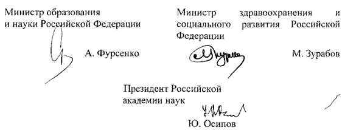

МИНИСТЕРСТВО МИНИСТЕРСТВО
ОБРАЗОВАНИЯ И НАУКИ ЗДРАВООХРАНЕНИЯ И
РОССИЙСКОЙ ФЕДЕРАЦИИ СОЦИАЛЬНОГО РАЗВИТИЯ
(Минобрнауки России) РОССИЙСКОЙ ФЕДЕРАЦИИ
(Минздравсоцразвития России)
РОССИЙСКАЯ АКАДЕМИЯ НАУК (РАН)
ПРИКАЗ
«3» ноября 2006 г. № 273/745/68
Об утверждении видов, порядка и условий применения стимулирующих выплат, обеспечивающих повышение результативности деятельности научных работников и руководителей научных учреждений и научных работников научных центров Российской академии наук
Во исполнение пункта 4 постановления Правительства Российской Федерации от 22 апреля 2006 г. N 236 «О реализации в 2006 - 2008 годах пилотного проекта совершенствования системы оплаты труда научных работников и руководителей научных учреждений и научных работников научных центров Российской академии наук» (Собрание законодательства Российской Федерации, 2006, N 18, ст. 2003) приказываем:
1. Утвердить:
1.1. Виды стимулирующих выплат, обеспечивающих повышение результативности деятельности научных работников и руководителей научных учреждений и научных работников научных центров Российской академии наук (приложение N 1).
1.2. Порядок и условия применения стимулирующих выплат, обеспечивающих повышение результативности деятельности научных работников и руководителей научных учреждений и научных работников научных центров Российской академии наук (приложение N 2).
2. Контроль за исполнением настоящего приказа возложить на статс-секретаря - заместителя Министра образования и науки Российской Федерации Ливанова Д.В., заместителя Министра здравоохранения и социального развития Российской Федерации Левицкую А.Ю. и вице-президента Российской академии наук Некипелова А.Д.

Зарегистрировано в Минюсте РФ 15 декабря 2006 г. Регистрационный N 8596
Приложение N 1
Виды стимулирующих выплат, обеспечивающих повышение результативности деятельности научных работников и руководителей научных учреждений и научных работников научных центров Российской академии наук
(утв. приказом Министерства образования и науки РФ, Министерства здравоохранения и социального развития РФ и Российской академии наук
от 3 ноября 2006 г. N 273/745/68)
1. Надбавки стимулирующего характера научным работникам научных учреждений и научных центров Российской академии наук:
1.1. По индивидуальным показателям результативности научной деятельности.
1.2. За выполнение исследований по результатам конкурсов в рамках ведомственных целевых программ Российской академии наук и ее региональных отделений.
2. Надбавки стимулирующего характера руководителям научных учреждений Российской академии наук за высокие показатели результативности учреждений.
3. Премиальные выплаты научным работникам и руководителям научных учреждений и научным работникам научных центров Российской академии наук.
Приложение N 2
Порядок и условия применения стимулирующих выплат, обеспечивающих повышение результативности деятельности научных работников и руководителей научных учреждений и научных работников научных центров Российской академии наук
(утв. приказом Министерства образования и науки РФ, Министерства здравоохранения и социального развития РФ и Российской академии наук
от 3 ноября 2006 г. N 273/745/68)
I. Общие положения
1.1. Настоящим устанавливаются порядок и условия применения стимулирующих выплат, обеспечивающих повышение результативности деятельности научных работников научных учреждений и научных центров Российской академии наук (далее, соответственно - научные работники, организации) и руководителей научных учреждений Российской академии наук (далее - руководители).
1.2. Квалификация научного работника или руководителя, сложность выполняемых им трудовых обязанностей, научное руководство исследованиями учитываются в должностных окладах и доплатах за ученую степень и при установлении выплат стимулирующего характера не учитываются.
1.3. Фонд стимулирующих выплат для научных работников и руководителей (далее - Фонд) организации является частью фонда оплаты труда. Информация о годовом объеме Фонда в установленном порядке доводится до всех работников организации.
1.4. Средства Фонда могут использоваться для установления надбавок стимулирующего характера, выплачиваемых ежемесячно или с иной периодичностью, и премиальных выплат.
1.5. Надбавки стимулирующего характера устанавливаются на срок, не превышающий одного года.
1.6. Решение о премиальных выплатах принимается руководителем организации на основании положения, утверждаемого на основе предложений ученого совета организации, и с учетом мнения представительного органа ее работников.
1.7. Решение о распределении Фонда по видам стимулирующих выплат принимается на основе рекомендаций ученого совета организации, при этом не менее 80 процентов общего объема Фонда должно направляться для выплат надбавок стимулирующего характера научным работникам. Для выплат надбавок стимулирующего характера руководителям и премиальных выплат может быть использовано не более 5 и 15 процентов общего объема Фонда, соответственно.
1.8. Руководитель организации при установлении надбавок стимулирующего характера на основе рекомендаций ее ученого совета и с учетом доли конкурсного финансирования в общем объеме бюджетных ассигнований организации вправе принять решение об использовании до 30 процентов общего объема Фонда для поощрения научных работников, выполняющих исследования по результатам конкурсов в рамках ведомственных целевых программ Российской академии наук и ее региональных отделений. Оставшаяся часть Фонда, предназначенная для выплат надбавок стимулирующего характера научным работникам, распределяется пропорционально индивидуальным показателям результативности научной деятельности (далее - ПРНД) научных работников, определяемым на основе учета результатов их работы за предыдущие два года. Результаты работ, выполненных в рамках ведомственных целевых программ Российской академии наук и ее региональных отделений, при определении ПРНД не учитываются.
1.9. Ученый совет организации в целях более полного учета особенностей деятельности организации и ее кадрового состава вправе принять решение об установлении поправочных коэффициентов в пределах от 0,5 до 1,5 при определении баллов по каждому из подпунктов пункта 2.1 раздела 2 настоящего порядка.
II. Определение индивидуальных показателей результативности научной деятельности научных работников, рекомендуемый порядок их учета
2.1. Индивидуальный ПРНД научных работников является суммой баллов, определяемых в соответствии с нижеприведенной методикой.
2.1.1. Начисление баллов за публикации в рецензируемых периодических журналах. Начисление баллов за публикации в рецензируемых периодических журналах производится на основании международных индексов цитирования периодических журналов в текущем году (далее - индексы). За публикацию статьи в рецензируемом российском или зарубежном журнале, имеющем индекс не менее 0.2, устанавливается балл, равный индексу журнала, умноженному на 45 или 30 соответственно. За публикацию статьи в журнале, не имеющем индекса, или с индексом менее 0.2, устанавливается балл 6. Публикации в российских журналах учитываются, если журнал включен в Перечень ведущих рецензируемых научных журналов и изданий, выпускаемых в Российской Федерации, в которых должны быть опубликованы основные научные результаты диссертаций на соискание ученой степени доктора наук. В институтах общественно-научного профиля по решению ученого совета к статьям в журналах, не имеющих индекса, могут быть приравнены рецензируемые статьи в сборниках и продолжающихся (серийных) изданиях Российской академии наук. В институтах, специализирующихся в области наук о Земле, по решению ученого совета к статьям в журналах, не имеющих индекса, могут быть приравнены карты. Для статей, написанных в соавторстве, балл за публикацию делится на количество авторов публикации, доли, меньшие 10 процентов, округляются до 10 процентов. Процедура технического учета индекса в расчете индивидуальных ПРНД разрабатывается Российской академией наук по согласованию с Минобрнауки России.
2.1.2. Начисление баллов за монографии, изданные в научных издательствах и имеющие шифр ISBN, и за учебники, имеющие гриф Минобрнауки России (рекомендованные учебно-методическими объединениями). За монографии и учебники устанавливается балл, равный объему монографии в печатных листах, умноженному на 2. При наличии соавторов балл делится на общее количество авторов. Не учитываются стереотипные переиздания, балл за переработанные переиздания устанавливается пропорционально объему нового материала. Включение конкретных монографий и учебников в расчет индивидуальных ПРНД принимается специальным решением ученого совета. По решению ученого совета в институтах общественно-научного профиля к монографиям могут быть приравнены словари.
2.1.3. Начисление баллов за участие в конференциях. За устный доклад на российской конференции устанавливается балл 4, устный доклад на международной конференции - 6, приглашенный доклад* на российской конференции - 20, приглашенный доклад на международной конференции - 30. При наличии соавторов, балл за доклад делится на количество авторов доклада, доли, меньшие 10 процентов, округляются до 10 процентов. Включение конкретных конференций в расчет индивидуальных ПРНД принимается специальным решением ученого совета. Обязательным требованием является наличие конкурсного отбора участников конференции. В целях настоящего документа международной считается научная конференция, более 50 процентов участников которой не являются гражданами Российской Федерации.
2.1.4. Начисление баллов за разработку научно-образовательных курсов. За разработку нового научно-образовательного курса лекций, читаемого впервые, устанавливается балл 20 за каждый семестр курса. За доработку научно-образовательного курса, включающего введение нового актуального материала, устанавливается балл 5. Включение конкретных научно-образовательных курсов в расчет индивидуальных ПРНД принимается специальным решением ученого совета.
2.1.5. Начисление баллов за патенты. За патент, являющийся результатом выполнения бюджетных НИР, устанавливается балл 20. Для патентов, полученных с соавторами, балл делится на общее число авторов.
2.1.6. Начисление баллов за руководство соискателями ученой степени и дипломниками. За руководство соискателем ученой степени, защитившим кандидатскую диссертацию, устанавливается балл 30, получаемый научным руководителем. За руководство дипломником при условии его последующего поступления в аспирантуру или на работу в научную организацию или высшее учебное заведение устанавливается балл 10, получаемый научным руководителем. При совместном руководстве дипломниками или соискателями ученой степени балл за руководство делится на число соруководителей.
2.1.7. Начисление баллов за цитирование. В 2006-2007 годах ученый совет организации вправе принять решение о порядке учета в индивидуальном ПРНД международного индекса цитирования научных работников при установлении надбавок стимулирующего характера и использовать для этого до 25 процентов общего объема Фонда. С 2008 года при определении индивидуальных ПРНД научных работников должен учитываться их российский индекс цитирования. Правила определения и учета российского индекса цитирования научных работников разрабатываются Российской академией наук по согласованию с Минобрнауки России.
2.2. Результаты научной деятельности учитываются в индивидуальном ПРНД научного работника при условии, если они соответствуют требованиям трудового договора и/или должностной инструкции и/или иного документа, определяющего тематику и содержание выполняемых им работ (исследований).
2.3. Индивидуальный ПРНД научных работников, работающих по совместительству, умножается на коэффициент, равный отношению продолжительности рабочего времени совместителя в месяц к нормальной продолжительности рабочего времени штатного работника на аналогичной должности. При этом в расчет должны приниматься только те результаты, которые получены при работе в организации - источнике выплат и официально к ней отнесены**. Для работников, поступивших на работу в организацию не ранее, чем за два года до года выплаты надбавок стимулирующего характера, при расчете индивидуального ПРНД учитываются их результаты, полученные по основному месту работы.
2.4. С целью повышения эффективности руководства научно-исследовательской работой, индивидуальный ПРНД руководителей подразделений устанавливается путем сложения 50 процентов индивидуального ПРНД, вычисленного по вышеприведенным правилам, и 75 процентов среднего ПРНД научных работников подразделения.
2.5. С целью закрепления в научных учреждениях молодых исследователей, не являющихся аспирантами очной формы обучения, в течение 5 лет после окончания высшего учебного заведения их индивидуальный ПРНД устанавливаются путем умножения индивидуального ПРНД, вычисленного по вышеприведенным правилам, на повышающий коэффициент 2. Для аспирантов, работающих в организации по совместительству, устанавливается повышающий коэффициент 3, который применяется в случае, если сотрудник был аспирантом не менее 4 календарных месяцев в рассматриваемом году. Для сотрудников, защитивших диссертацию в возрасте до 40 лет, как правило, устанавливается повышающий коэффициент 2 в год после защиты диссертации, а затем коэффициент 1,5 в течение последующих 2 лет.
III. Процедура назначения надбавок стимулирующего характера
3.1. Для начисления надбавок стимулирующего характера собираются заявки от научных подразделений организации в порядке, устанавливаемом руководителем организации с учетом мнения ее ученого совета. В 2006 г. подача заявок происходит в течение месяца после утверждения порядка и условий применения стимулирующих выплат научным работникам научных учреждений Российской академии наук, их рассмотрение и вынесение решений - не позднее одного месяца после окончания срока подачи заявок. Начиная с 2007 г., подача заявок происходит до 31 декабря предыдущего года, рассмотрение заявок и вынесение решений - не позднее одного месяца после окончания срока подачи заявок. Иные особенности процедуры, в том числе форма заявки, порядок ее автоматизированного учета и обработки в специализированной информационной системе организации, разрабатываются Российской академией наук, утверждаются Минобрнауки России и доводятся до всех заинтересованных организаций.
3.2. Все решения руководителей организации и ее ученого совета, касающиеся реализации процедуры назначения стимулирующих выплат, включая общие размеры Фонда и его долей, процедуру расчетов, список учтенных конференций, монографий и лекционных курсов, размеры выплат руководителям учреждения, а также соответствующие приказы по организации, должны предоставляться для ознакомления всем работникам организации в установленном порядке.
_____________________________
* Доклад, инициатором которого выступает организатор конференции.
** Наличие наименования организации, как места выполнения работы, в публикациях, материалах конференций и иных результатах научной деятельности, учитываемых при расчете индивидуального ПРНД.
Приказ Министерства образования и науки РФ, Министерства здравоохранения и социального развития РФ и Российской академии наук от 3 ноября 2006 г. N 273/745/68 “Об утверждении видов, порядка и условий применения стимулирующих выплат, обеспечивающих повышение результативности деятельности научных работников и руководителей научных учреждений и научных работников научных центров Российской академии наук”
Зарегистрировано в Минюсте РФ 15 декабря 2006 г.
Регистрационный N 8596